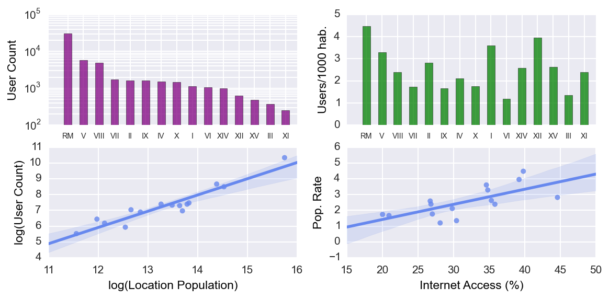
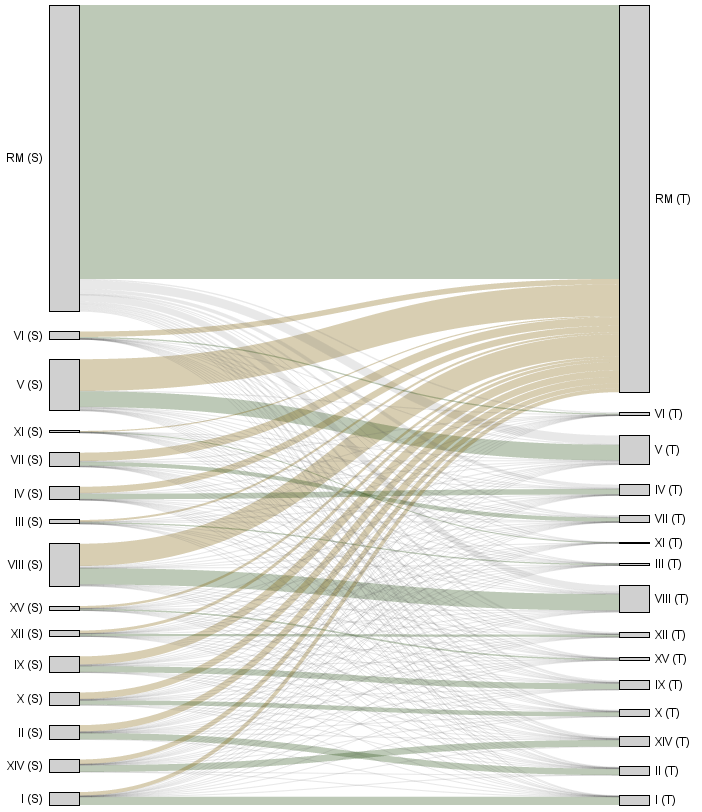
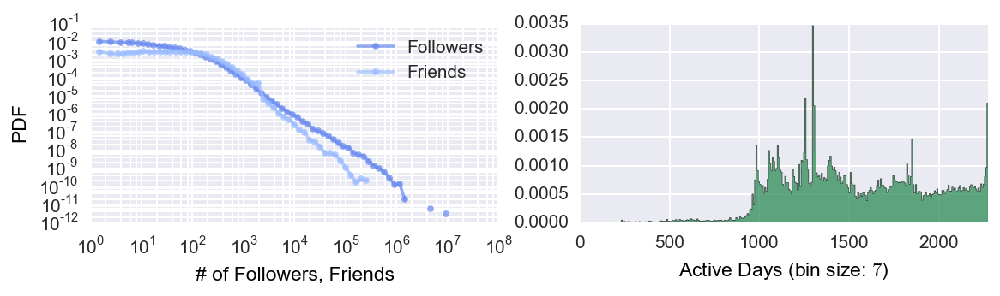

This is one of the two key projects of my doctoral thesis (see its proposal). It is about understanding how a virtual population behaves in Twitter in the presence of systematic biases that may affect its behavior. In particular, we focus in the population of Chile, and study how people behave in the context of geographical centralization. Our main research questions are: when the population of a country is geographically centralized, is the virtual population in Twitter centralized as well? If so, how to improve people behavior, i.e., how to reduce centralization in how people interact with others and diffuse information?”
As dataset we consider a set of tweets crawled during the municipal elections in Chile held in 2012. Here is a wordcloud of the most frequent terms in the collection, after a cleaning process:

We tested if the virtual population was representative of the physical population, and we found that it was spatially representative:

What we did to test the existance of centralization was to build an interaction graph where locations interact between them based on how people mention, reply and retweet people from other locations. This is a visualization of that interaction graph (on the left is the source location; on the right, the target location of the interaction graph):

Even though the population in Chile is imbalanced, the observed amount of interactions to Santiago/Región Metropolitana is higher than expected. To analyze this, we developed a methodology to define how centralized the virtual population is, and then we defined an algorithm to actually improve the situation. You can read more about it in our Hypertext 2014 paper (jointly presented with Mounia Lalmas) titled: Balancing Diversity to Counter-measure Geographical Centralization in Microblogging Platforms
We have evaluated our algorithm in user studies and the results have been great. In addition, we are working on visualizations of the timelines generated by our algorithm, so expect more cool things to come, specially in news contexts. We want to make user interfaces that show news about the whole country, not just about Santiago :)
In this project, besides my advisors Ricardo Baeza-Yates and Mounia Lalmas, I have been lucky to collaborate with Bárbara Poblete and to receive feedback and advice from Daniele Quercia and Diego Sáez-Trumper.
Bonus: researching people and its behavior has allowed us to find interesting things which are not directly related to our main research question. For instance, consider the following image that shows user registrations on Chile (see the right figure):

Notice the peak? It's the week of the 27F Earthquake from 2010, one of the largest earthquakes ever. I remember how Twitter was used to spread information and help others (unfortunately, other people misused it as well).
Resources:
- Ornitología Virtual, paper in spanish to be published in the book Socializar Conocimientos II: Observando a Chile desde la Distancia. CC Licensed.
- #Santiago is not #Chile, or is it? A Model to Normalize Social Media Impact Presented at the 1st Chilean Conference on Human Computer Interaction.
- Balancing Diversity to Counter-measure Geographical Centralization in Microblogging Platforms, presented at the Hypertext 2014 conference in Santiago, Chile.